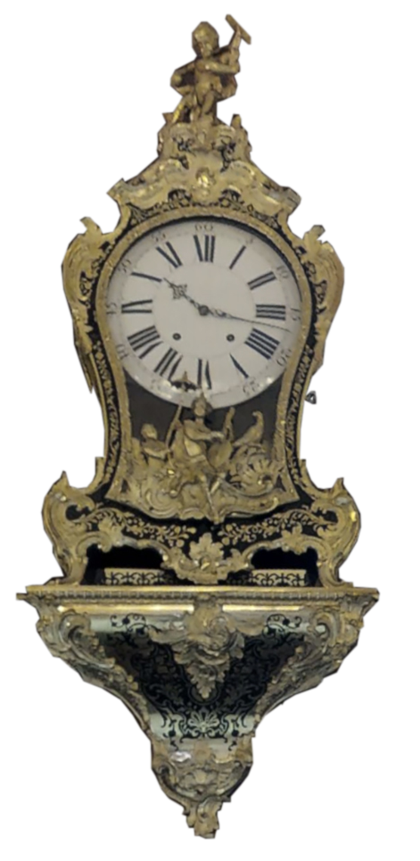
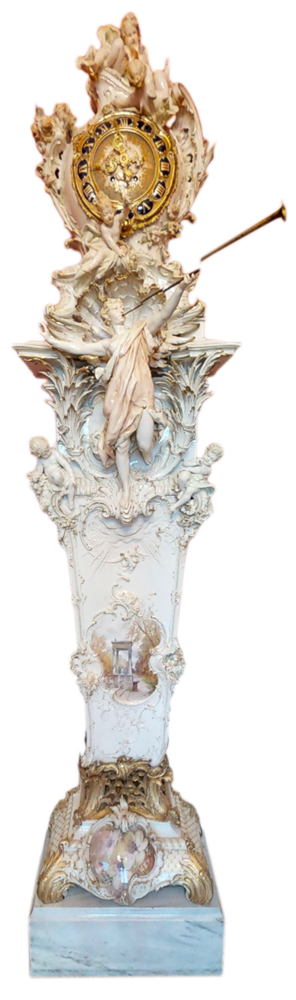
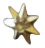
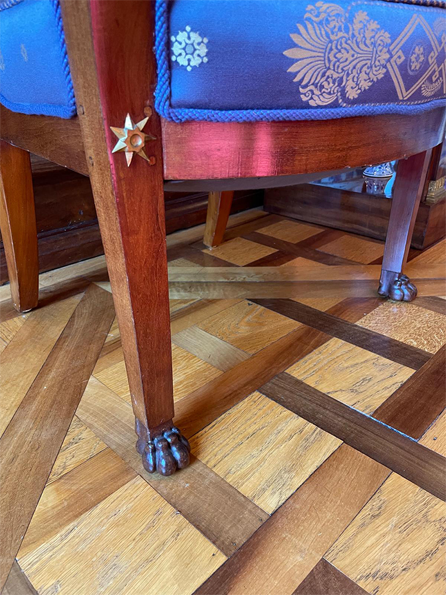
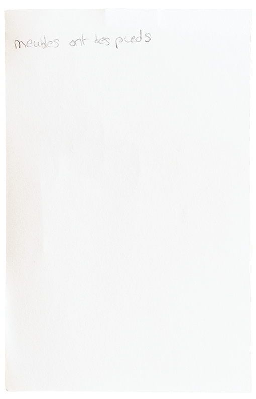
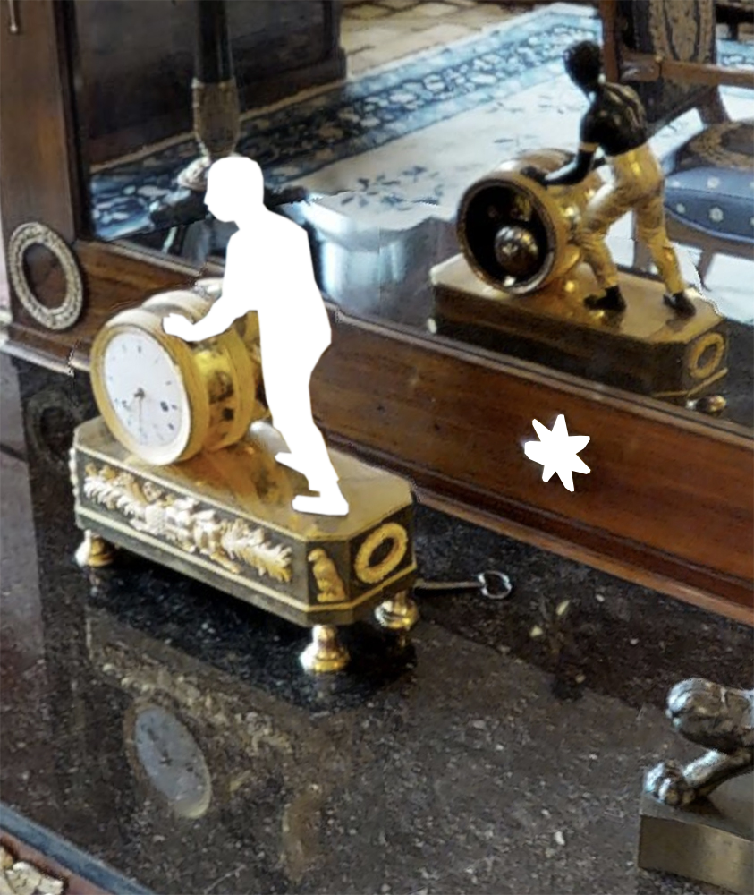

Alles wirkte irgendwie wie eingefroren in der Zeit (ein bisschen wie ein Foto), ausser die Uhr, die noch lief (mit dem Pendel und einem leichten Geräusch).Ethan Pageot

Die Sekunden ticken und die Jahrhunderte werden plötzlich spürbar.
Wer sich im Raum bewegt, kann sich auf Details achten. Nicht nur sichtbare, auch das Ticken einer Uhr fällt plötzlich auf.
Dieser Kontext verliert sich bei einer digitalen Reproduktion.




Hier die Uhr, von der ich mir nicht sicher bin, ob ich sie abbilden soll. Gleichzeitig fände ich es fahrlässig, es nicht zu tun. Deshalb wird die Figur hier – wie leider auch vor Ort – nur im Spiegel reflektiert.
Ich frage mich, ob man diese Gobelins1 und Vorhänge auch riechen kann…Ralf Junghanns
1Fachbegriff für «Wandteppiche», genauer Wirkereien. Im Treppenaufgang hängen zwei solche Stoffe in enormer Grösse.